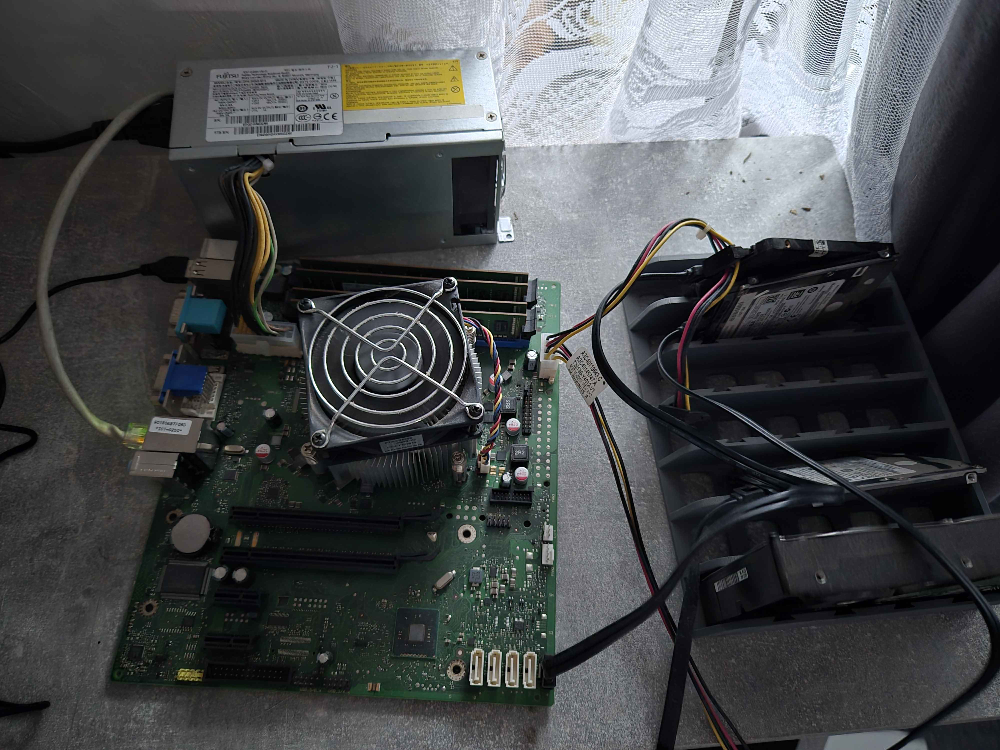

Praktické projekty, servery a experimenty
← Zpět na CV📅 12. 3. 2025
Můj domácí server běží na Proxmox VE, což je open-source virtualizační platforma.
Umožňuje mi spravovat více virtuálních strojů a kontejnerů na jednom fyzickém hardwaru.
Využívám ho pro různé účely, včetně hostování herních serverů, webových aplikací, Pi-hole
a experimentování s různými operačními systémy.
Použil jsem starý počítač s těmito specifikacemi:
i3 - 4170, 8GB RAM, 128GB SSD a různé HDD disky.
